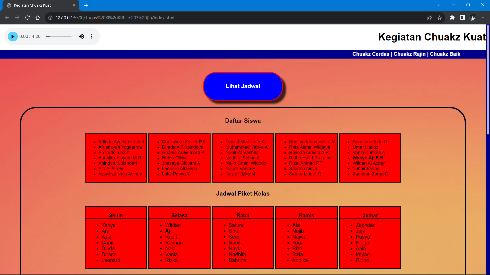
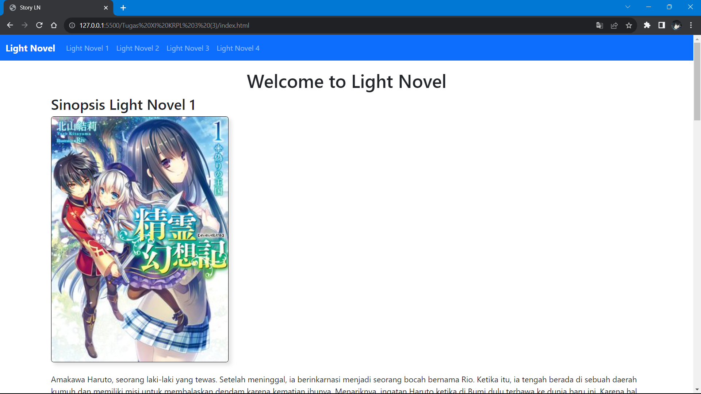
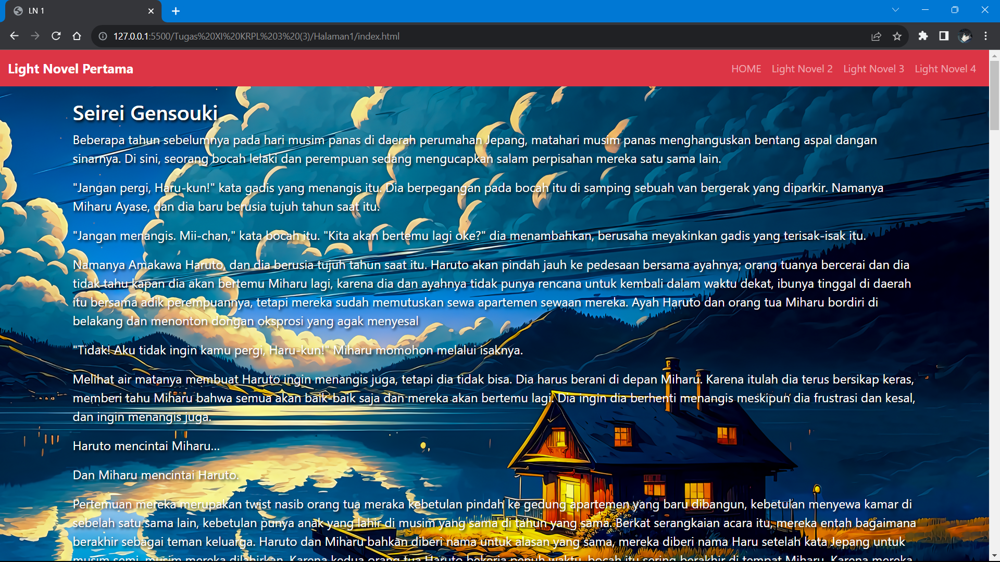
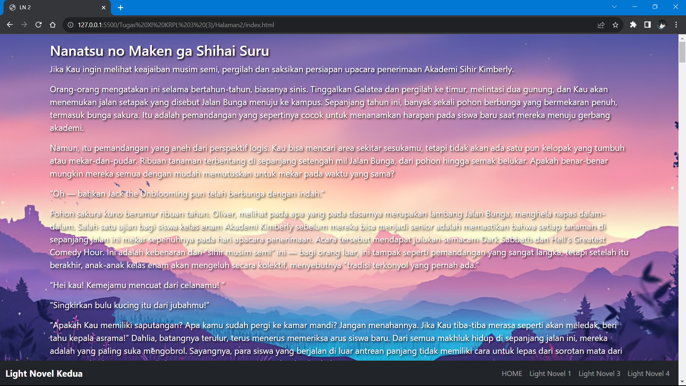
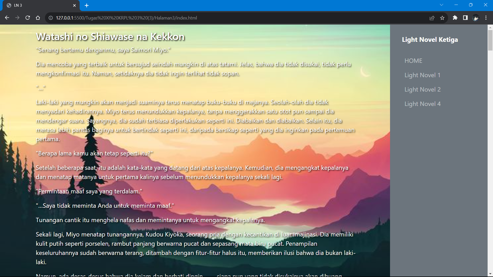
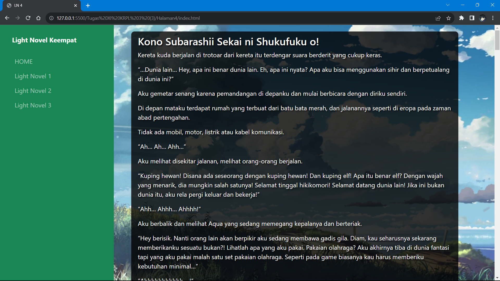

Welcome to My Portofolio
Profil Pribadi
Assalamualaikum Warahmatullahi Wabarakatuh,
Halo, nama saya Wahyu Aji Setyo Nugroho, dari kelas XI SMK Negeri 8 Semarang dengan jurusan PPLG (Pengembangan Perangkat Lunak dan Gim),
yang lahir pada tanggal 04 Januari 2007. Saya biasanya sering membuat sebuah website sederhana, dan akhir-akhir ini saya ingin mempelajari bagaimana cara membuat sebuah game.
Software yang biasanya saya gunakan untuk membuat website adalah Visual Studio Code serta menggunakan dan mempelajari framework dari Bootstrap.
Dan Software yang biasanya saya gunakan untuk belajar membuat game adalah Unity.
Riwayat Pendidikan
-
2011-2012
TKIT Insan Mulia (Kota Semarang)
-
2013-2018
SD Negeri Ngaliyan 03 (Kota Semarang)
-
2019-2021
SMP Negeri 18 Semarang (Kota Semarang)
-
2022
SMK Negeri 8 Semarang dengan jurusan PPLG (Kota Semarang)
Hobi Saya
Saya memiliki hobi diantarnya menonton anime, genre yang saya sukai diantaranya Action, Romance, Fantasy, dll. Setelah itu, saya memiliki hobi bermain game, game yang biasanya saya mainkan cukup banyak, diantaranya adalah, Mobile Legends, Genshin Impact, Honkai Star Rail, Toram Online, dan Valorant. Dan satu hobi lagi yaitu mendengarkan musik, musik favorit saya adalah J-POP.
Kelebihan dan Kekurangan Saya
Saya memiliki beberapa kelebihan dan kekurangan. Kelebihan saya adalah ketika saya berniat mempelajari sesuatu hal yang baru, saya dapat cepat memahami suatu hal yang baru tersebut. Kelemahan saya adalah terkadang saya tidak konsisten dalam mempelajari suatu hal yang baru, tetapi seiring dengan berjalannya waktu, saya dapat mengembangkan kemampuan untuk mengurangi kelemahan-kelemahan saya.
Pengalaman
Saya memiliki pengalaman dalam pembuatan website sederhana dengan menggunakan bahasa pemrograman HTML dan CSS, dan pembuatan sebuah database dengan XAMPP menggunakan bahasa pemrograman PHP.
Bahasa Pemrograman yang Dipelajari
HTML
CSS

PHP

Python
Projek Latihan yang sudah pernah saya buat
Website





